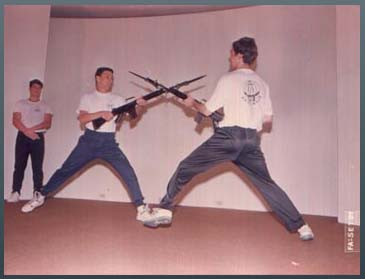
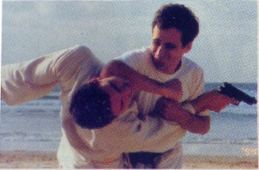

Fazer uso de arma de fogo é uma coisa complicada. Nem sempre o oponente é um marginal, um criminoso. Por vezes, pessoas de bem estão em um dia de fúria, e não oferece risco maior do que uma luta corporal. Obviamente é totalmente desaconselhável enfrentar um embate físico quando se porta uma arma. Não raro vejo casos de policiais que tiveram suas armas tomadas em meio a uma confusão, mas isso rende outro post.
Contudo não é só profissionalmente que encontramos problemas. Em nossa vida cotidiana podem surgir situações em que precisamos nos defender para evitar agressões injustas. E nem vale aquela filosofia "eu não gosto de violência", porque as vítimas nem sempre são pessoas que se predispõem a isto. Você pode ser o cidadão mais pacato do mundo, e estar em uma boite onde um grupo de valentes "pit boys" te escolhem de bucha. E, como normalmente é praticada covardia, sempre escolhem alguém aparentemente fraco.
Aí entra o Krav Magá. Não é uma arte marcial, onde você acaba se concentrando em um adversário. Krav Magá é um sistema de defesa pessoal, que pode livrá-lo de ataques individuais -inclusive com uso de objetos como tacos de baseball, garrafas quebradas, facas- ou até mesmo de um grupo de brigões. Os golpes são curtos e certeiros em locais sensíveis do corpo humano, e o praticante aprende a valer-se de movimentos rápidos e explosivos, o que faz com que você não precise ser um monte de músculos ambulante para derrubar um oponente.
O Krav Magá é praticado maciçamente em Israel, local onde foi desenvolvido em meados de 1940 por Imi Lichtenfeld. É o sistema de defesa pessoal adotado pelo Exército Israelense, e inclusive nas aulas de educação física das escolas é lecionada a arte.
 Em 1990 Mestre Kobi Lichtenstein veio de Israel para o Brasil, a fim de difundir o bem sucedido equema de defesa pessoal, tendo fundado a Federação Sul Americana de Krav Magá, e é o único representante oficial no Brasil e no resto da América Latina.Durante os treinos, os alunos desenvolvem a parte física e elasticidade, a aprendem técnicas de defesa e ataque fulminantes, e com apenas 6 meses de treino estão aptos a se defender de possíveis agressões, não importando o tamanho do oponente.
Conheci o Krav Magá há quase 10 anos, com o Instrutor Delso Vargas, uma pessoa fenomenal, e dedicado aluno e professor da técnica. Ele atualmente ministra aulas em uma academia em Jacarepaguá/RJ, na Freguesia.
Todas as academias que ministram oficialmente o Krav Magá estão sob a supervisão direta de Mestre Kobi, e os exames de mudança de faixas são feitos diretamente com ele, o que garante a qualidade vigiada de perto pelo mestre. Por isso lembre-se, quando você quiser praticar o Krav Maga, confira se a academia escolhida está cadastrada no site da Federação, já que se tem notícias do uso indevido do nome "Krav Magá".
Mas quem domina técnicas de defesa pessoal desse nível, inclusive com treinamentos de cunho militar, não é perigoso, não vai querer "bater em todo mundo" na rua? Não, a conduta dos praticantes é observada de perto pela Federação, e já houve inclusive a expulsão de pessoas devido a ter se defendido com excesso injustificável em determinada ocasião.
Taí uma boa dica para você, que quer manter a forma física e disposição, e ao mesmo tempo aprender a se defender, de maneira a livrar-se de uma confusão e ir embora, ou se for o caso imobilizar o encrenqueiro para as medidas legais cabíveis. Confira uma breve demonstração no vídeo abaixo, e visite também o site oficial da Confederação Sul Americana de Krav Magá, onde tem mais vídeos, fotos e detalhes da história desta eficiente técnica de defesa pessoal.
[youtube 92UHu1zTobs]